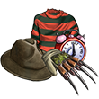
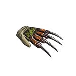
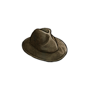
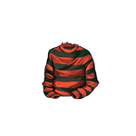
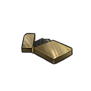
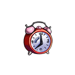

Получено: файл; исходный URL. Иллюстрация в отдельной статье ViveR_9 «Очень страшная коллекция»; исходный файл без перекодирования. Авторство отдельно не установлено. Страница: источник.

Очень страшная коллекция
Браузерная социальная версия; историческая статья; дата редакции неизвестна- Тип
- Коллекции
- Версия и дата
- Браузерная социальная версия; историческая статья; дата редакции неизвестна
Элементы коллекции
















Данные по источнику · Браузерная социальная версия · историческая статья; дата редакции неизвестна
Предварительно: один материал, требуется сверка. Требуется сверка.
- Состав (источник Zombie-island)
- Перчатка Фредди; Шляпа Фредди; Кофта Фредди; Зажигалка для Фредди; Будильник Фредди.
- Награда (источник Zombie-island)
- 1 Гвозди; 250 Опыт.
- Где копать Очень страшную коллекцию в Зомби Ферме лопатами
- Бригада Элвиса; Шалаш; Пирамида; Замок; Лестница в небо; Мельница; Маяк; Флаг БАТЭ; Флаг Зенита; Флаг ЦСКА; Флаг Спартака; Горгулья; Могила Z; Рука зомби; Медвежонок; Ожившая рука; Клоун; Медвезомби; Медвед; Зомби-рок; Айти-могила; Часовня; Любимый забор; Тедди-лав; Левая половина; Бархатное сердце; Аэроплан; Снежище; Волшебный олень; Кроль; Голуби; Дерево мира.
- Очень страшная коллекция выпадает из мешков Кладоискателей
- Кладоискатель; Кладоискатель с мозгами.
- Очень страшную коллекцию можно выиграть в рулетке
- Яблочный автомат.
- Очень страшная есть в Секретном кладе, ценностях и сокровищах
- Клубничное; Мистический; Коллекционная посылка; Коллекционный; Коллекционер; Новогодняя елка; Вишневый торт; Секретный клад; Сундук Яблони; Сундук Чудовища.
- Очень страшная коллекция попадается на Пиратских островах
- Пиратский сундук.
Данные по источнику · браузерная версия; платформа не указана · дата редакции не установлена
Предварительно: Содержимое списка: изображения и колонки могут терять смысл при извлечении текста; отдельная страница и дата не проверены. Подписи alt иногда ошибочны.. Требуется сверка.
- Текст карточки из каталога
- Гвозди и 250 опыта Перчатка Фредди Шляпа Фредди Кофта Фредди Зажигалка для Фредди Будильник Фредди В сундуках после сбора урожая Яблонь. Где копать: Пирамида, Мельница, Маяк, Замок, Бригада Элвиса, Медвежонок, Медвед, Клоун, Часовня, Рука терминатор
Данные по источнику · Мой Мир (Mail.ru); историческая таблица · дата редакции не установлена
Предварительно: Источник сам использует знаки вопроса; не следует считать такие места подтверждёнными. Возможны изменения патча и платформы; независимость от других справочников не доказана.. Требуется сверка.
- Название в источнике
- Очень страшная коллекция
- Где копать
- Пирамида, Мельница, Маяк, Замок, Бригада Элвиса, Медвежонок, Медвед, Клоун, Часовня, Рука терминатор
- Награда
- Гвозди и 250 опыта
Данные по источнику · браузерная версия; на сайте указана игра ВКонтакте · дата редакции не установлена
Предварительно: Исторический текст; сильно совпадает со справкой Zommbie.at.ua, независимость не доказана. Отрицания и доступность могут измениться с патчем.. Требуется сверка.
- Где искать по странице «Зомбастики»
- Пирамида, мельница, медвезомби, клоун, ожившая рука, айти могила, замок.
Данные по источнику · историческая браузерная социальная версия ВКонтакте; редакция неизвестна · 03.10.2018 — дата публикации; дата редакции неизвестна
Предварительно: Фанатский источник; актуальность, вероятности и независимость от других справочников не установлены.. Требуется сверка.
- Состав
- Перчатка Фредди, Шляпа Фредди, Кофта Фредди, Зажигалка для Фредди, Будильник Фредди.
- Обмен
- 1 Гвозди и 250 опыта.
- Получение
- Создание в Изумрудной Мельнице (рецепт не указан), рулетка Яблочного автомата; среди ценностей Драгоценный цветок, Клубничное, Ящик из-под яблони, Коллекционная посылка; также Кладоискатель.
- Палочки
- Октавий, Пончик отважный, Пасхальное яйцо и два безымянных подземных ресурса.
- Лопаты у друзей
- Шалаш, Цирк, Замок, Кино, Коллайдер, флаги, Мельница, Карета, Планетарий, Пирамида, Дерево Мира, Лестница в небо, Клоун, Ожившая рука и другие объекты, Секретный клад.
- Применение
- Указаны задания и условия победы, но количества не приведены.
Данные по источнику · историческая браузерная версия, платформа не указана · 10.01.2014 — дата в каталоге; дата редакции материала неизвестна
Предварительно: Фанатский список без вероятностей и уточнения площадки; независимость от других источников не установлена.. Требуется сверка.
- Где искать по списку сайта
- Пирамида, мельница, медвезомби, клоун, ожившая рука, айти могила, замок
- Оговорка
- Список может относиться к разным условиям, инструментам и периодам игры; не доказывает гарантированное выпадение. Заявления «только» и «невозможно» относятся лишь к времени и версии источника.
Связанные сущности
нет проверенных связей — требуется сверка.
Источники
- прочитано: Zombie-island.moy.su; проверка 2026-11-21
- ZOMBIA: прочитана карточка в списке
- Ссылка на отдельную страницу; отдельно не проверена
- Zombiemail: строка таблицы коллекций; Мой Мир
- Зомбастики: прочитана соответствующая строка; возможная копия другого справочника
- ViveR_9: прочитанная отдельная статья
- zommbie.at.ua: где искать коллекции